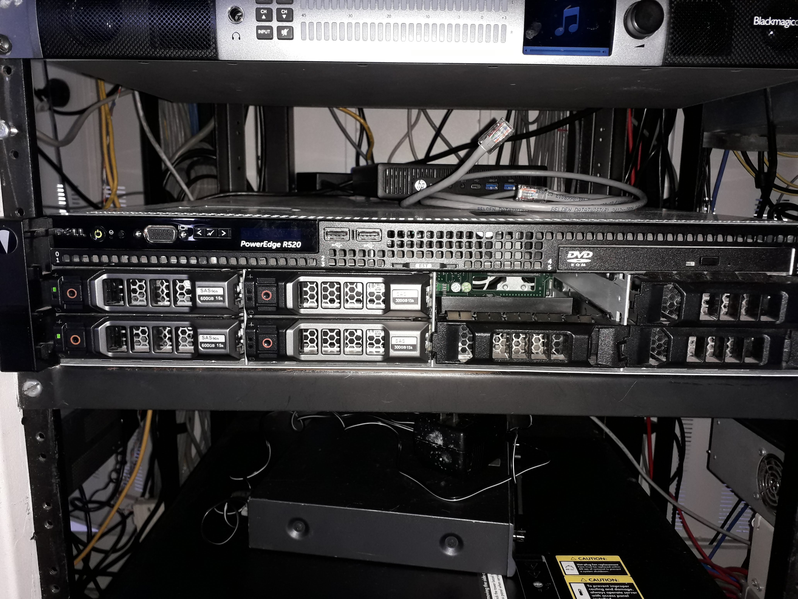
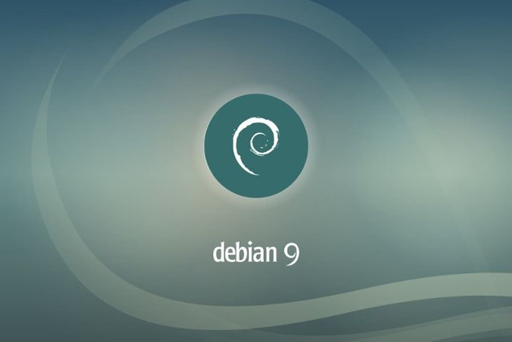
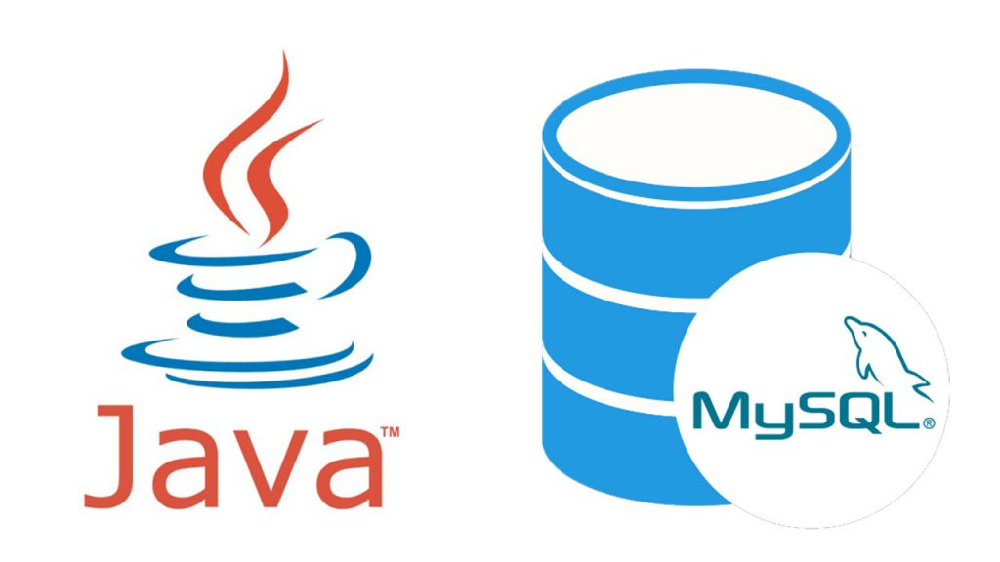

Configurar Servidor
El ingeniero, me encargo realizar una aplicación que se conectará a las cámaras de video mediante FTP y el contenido (previamente cargado) se almacenara en el servidor POWER EDGE R520. Empece a configurar el servidor (actualizando a su versión más actual)
Se configuró Idrac y Lifecycle

Instalación de Softwares
Se agregó proftp para la conexión peer to peer
Se instaló el sistema operativo Debian 9, junto con MariaDB para almacenar los datos obtenidos por las cámaras del personal.

Desarollo de software
Se desarrolló una UI design-dashboard, usando el lenguaje Java.
Se usó el programa para descargar los videos almacenados en el servidor, para editarlos y mandarlos al aire.
